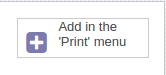

Configuration and Use
After installing the module you can setting it.
After installing the module you can go to Settings > Dashboard and active developer mode (you must be admin user).
Configure Database Connection
After, go to Settings > Technical > Jasper Reports > Configure Database Connection to configure database configure.
When this module provide support to PostgreSQL only. Others database support will be added after. In the follow screen, add database data like host, port and other relevant fields.
- Data Source Name: a string name to identify record. You can add any value here.
- Database Name: your database name. Default is database of Odoo.
- Host: hots of database. Default value is localhost.
- Port: access port of your database. Default is 5432 (PostgreSQL port)
- Connector: plugin to connect in database. When, this only provide in PostgreSQL.
- User: User to connect in database.
- Password: Password of database user.
 After insert the fields, press the button
After insert the fields, press the button 
A window will appeared with a message that connection is
successfully. Otherwise, a error message will be show.

Create a Report Action
The next step, is create a record on Settings -> Technical
-> Actions -> Reports.
 Create a new report and Report Type fields select Jasper
Report. The page Jasper Report will be visible.
Create a new report and Report Type fields select Jasper
Report. The page Jasper Report will be visible.
In this page, add the .jrxml template in Report
Template field. Add to .jrxml of subreports
if exist.
In Database field, select the database that you add
before.
In Model field add the model where you report will be attached, i.e., sale.order,account.invoice, for example. The Template Name is a name/id of report.
Finally, in right side, press the button
to add report in print menu on record screen.
Print the Report
Go in the page of model tah you select in Model field and in the drop-down print button. You can print the report created.